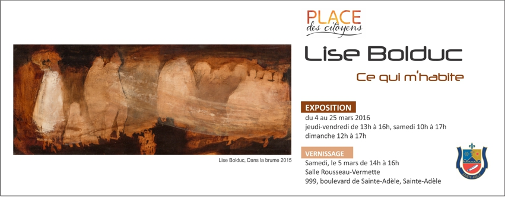
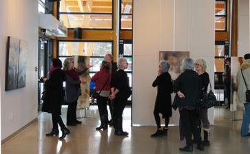

Commissaire de l'exposition Johanne Martel
LISE BOLDUC
Ce qui m'habite
Lise livre ici tout ce qui vit en elle : enfant curieuse de la Beauce, étudiante sérieuse en arts visuels à l’UQAM, peintre décoratrice, artiste à part entière.
Lise nous partage toutes ses facettes.
Dans le cadre de cette exposition, elle lève le rideau sur un voyage intérieur qui l’a menée jusqu’au centre de la scène en tant qu’artiste qui fait preuve d’assurance et qui convainc sans peine.
Lise se livre à cœur ouvert et elle souhaite qu’on puisse lui offrir un peu de nous-même en retour. Ses œuvres la révèlent en même temps qu’elles invitent à l’exploration présentant tour à tour une structure qui nous guide et une liberté qui laisse libre cours à notre cheminement intérieur.
Ses techniques peuvent paraître sans prétention et directes à première vue, mais la profondeur des émotions qui en résultent nous saisit et nous incite à faire une pause où couleurs et textures apaisent, soignent, caressent.
À notre tour d’accueillir ce qui l’habite.
Brian Parsons
Traduction : Rozenn Begasse, Lucie Bertrand


Conception Johanne Martel www.magadam.com